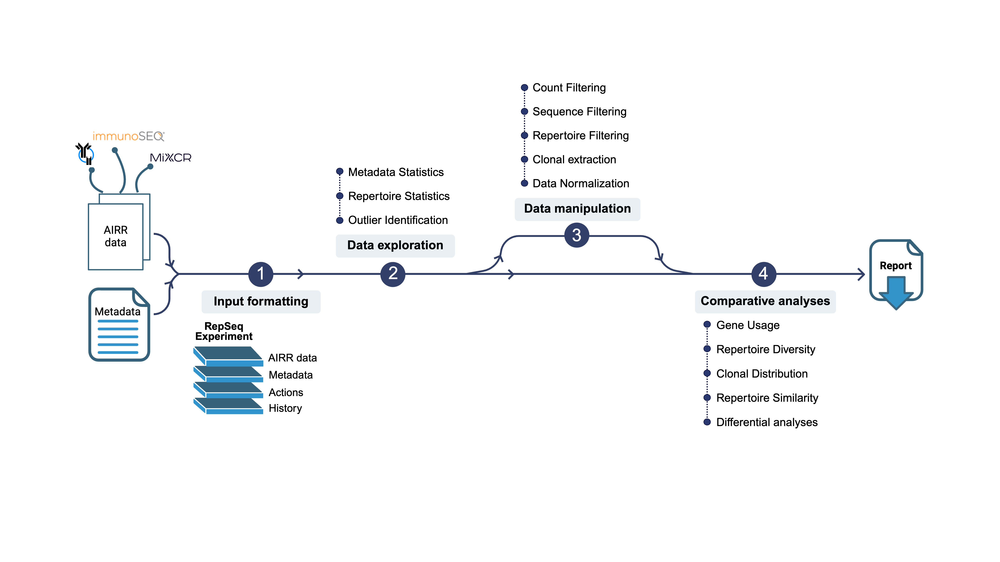

AnalyzAIRR is an R package developed to analyze bulk Ig/TCR repertoire datasets.
- It proposes an analytical routine starting with data exploration, leading to in-depth statistical comparisons with the aim of answering defined biological questions.
- It allows the calculation of a set of diversity measures and statistical metrics applicable at any level of granularity.
- It offers different types of data visualization and ready-to-publish graphics that can be easily personalized.

Shiny interface
A Shiny web application was developed for AnalyzAIRR making it user-friendly for biologists with little or no background in bioinformatics. The application can be downloaded from this Github repository.